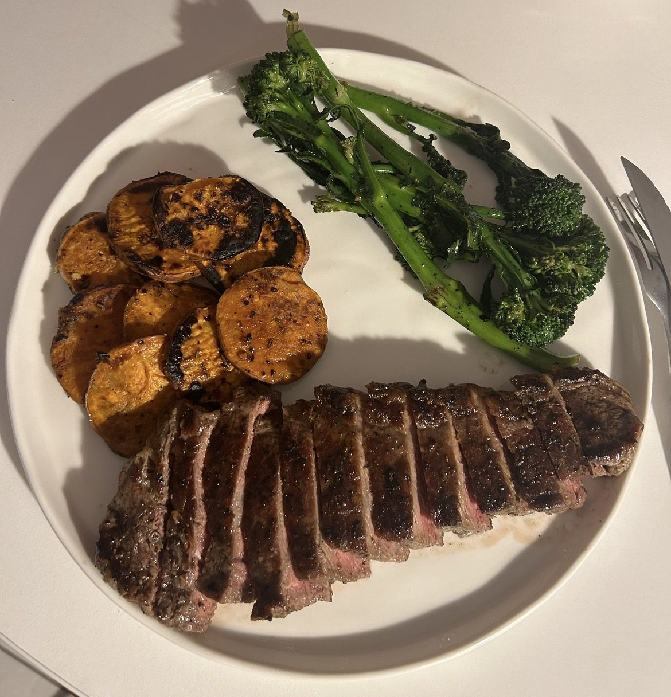

A fresh, satisfying dinner plate that feels elevated but still easy to pull together on a weeknight. The steak, roasted sweet potato, and greens are a simple combination that can be swapped around depending on what’s in the fridge.
Use asparagus, green beans, or broccoli instead of broccolini, swap the sweet potato for fries or regular roasted potato, and change the chimichurri to a mustard sauce, salsa verde, or simple lemon butter.
It’s meant to be flexible, bright, and filling — a great meal for one or two people with plenty of fresh flavour.

1 serving
⏱ 30–40 mins • 💪 High Protein • 🍽 Base: 1 serving
High-quality protein from steak supports muscle growth and recovery, sweet potato provides slow-release carbohydrates and potassium, while chimichurri delivers antioxidants and healthy fats from olive oil.